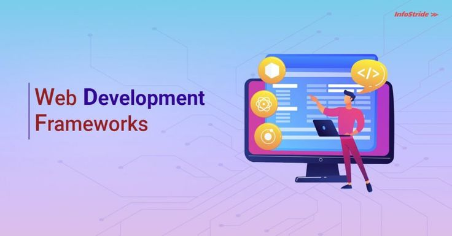
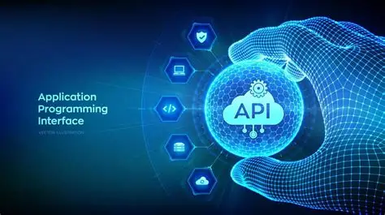
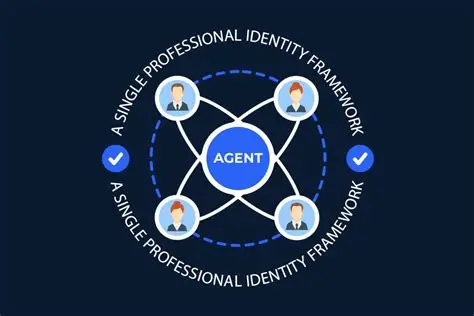
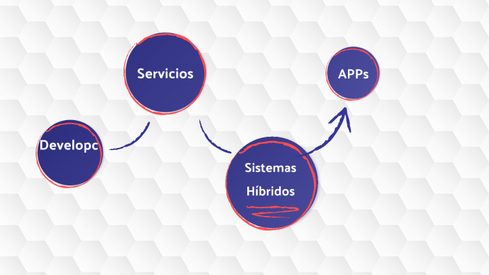

En esta unidad se estudian los frameworks para el desarrollo de interfaces de programación de aplicaciones (API) y la implementación de APIs para aplicaciones orientadas a servicios. Se explicarán tanto los conceptos teóricos como ejemplos prácticos y buenas prácticas de desarrollo.

Los frameworks son conjuntos de herramientas y librerías que facilitan la creación de aplicaciones y servicios web. Permiten trabajar de manera más rápida, con código organizado y siguiendo estándares recomendados.

Una API (Interfaz de Programación de Aplicaciones) permite que distintas aplicaciones se comuniquen entre sí. El desarrollo de APIs requiere definir claramente los endpoints, métodos HTTP y estructuras de datos que se intercambiarán.
Ejemplo práctico: una API de tienda en línea podría tener endpoints como
/productos para listar productos o /usuarios/login para autenticar usuarios.

Elegir el framework correcto es clave para el éxito de un proyecto. Dependerá de factores como la escala de la aplicación, el lenguaje de programación y las necesidades de seguridad y rendimiento.

El desarrollo de APIs sigue un proceso estructurado que asegura calidad y funcionalidad. Incluye planificación, diseño, implementación, pruebas y mantenimiento.
Ejemplo: una API bancaria podría requerir endpoints para consultar saldo, transferir dinero y ver historial de transacciones, con seguridad reforzada y registro de logs.